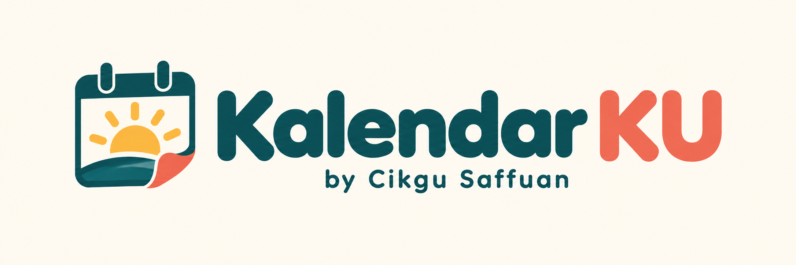

Klik mana-mana tarikh untuk menanda atau menulis catatan.
Malaysia Holiday API · DyDxSoft
Tamil solar · Lahiri · Kuala Lumpur · Swiss Ephemeris
BKPP · 2026 · KPM · 2026
© Grafik / Artwork / 图片 / படங்கள்
KALENDAR MALAYSIA
Kenali tarikh, raikan perayaan dan belajar bersama.